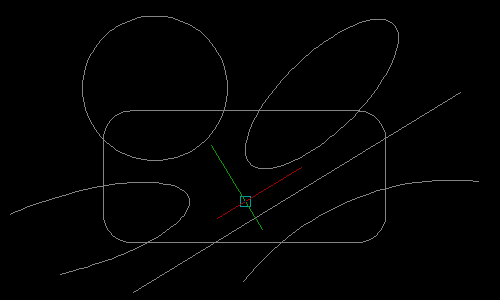
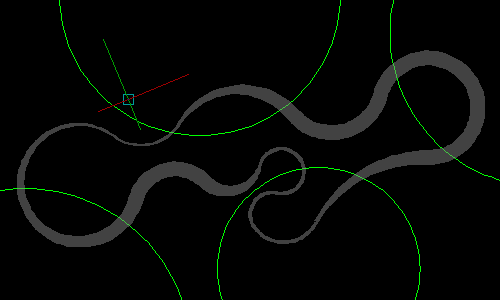

Object Break
This page is delivered for consistency purposes only, as part of the LeeMac sample module of DynALisp, which shows how DynALisp turns existing AutoLISP programs into a module. The program and its description are the work of Lee Mac, who keeps all the credit for them. The original page, with the latest version, is on Lee Mac's website: https://lee-mac.com/objectbreak.html
See also Circle Break.
| Function Syntax | LM-ObjectBreak – original syntax: brk / brko (see aliases) |
| Current Version | 1.0 |
| Compatible with AutoCAD for Mac? | No |
| Compatible with AutoCAD LT? | Yes |
| Original Page | lee-mac.com/objectbreak.html |
Program Description
A generalisation and enhancement of my Circle Break program, this program enables the user to break a selected object either at two specified points, or at two points of intersection with another selected object, and apply a set of properties to the selected portion of the object.
As per my Circle Break program, the motivation for creating this program was to streamline the procedure of displaying hidden sections of geometry. Previously, an object would need to be broken separately at two points (perhaps using the AutoCAD break command), before selecting the resulting section and applying a set of properties to indicate hidden detail.
This manual method is suitable for polylines and open objects (such as lines, arcs & elliptical arcs); however, since an arc or elliptical arc cannot span a full circle, circles & ellipses cannot be broken at a single point and hence the hidden section would need to be manually recreated.
This program offers two commands to facilitate this operation:
brko: Break with Object
This command will prompt the user to select either a Line, Circle, Arc, Ellipse, Elliptical Arc or LWPolyline at the section to be broken, and then to select a second object which intersects the first in at least two places.
The program will then break the first selected object at the two closest points of intersection located either side of the point of selection, before applying the set of properties to the selected section.
Demonstration of brko Command

brk: Break at two points
Upon issuing this command, the user may select a compatible object (as listed above) at the section to be hidden, and then select two break points. The selected object is then broken between the two points and a set of properties are applied to the selected section.
And now to challenge the program...
Demonstration of brk Command

Furthermore, both of the above described commands as offered by this program will operate successfully under all UCS & Views, and with objects constructed in any UCS plane.
Properties of Broken Section
The set of properties (Layer, Linetype, Lineweight etc.) to be applied to the hidden section of geometry are listed at the top of the program source code (beneath the code header) and may be altered to suit the requirements of the user. If properties are omitted from the list, the 'hidden' section of geometry will inherit these properties from the selected source object.
See also Circle Break.
Bundled program notes
;;-------------------------=={ Object Break }==-------------------------;;
;; ;;
;; This program enables the user to break a selected object at two ;;
;; specified points or at two points of intersection with another ;;
;; selected object, and apply a set of properties to the selected ;;
;; portion of the object. ;;
;; ;;
;; The motivation for creating the program was to streamline the ;;
;; procedure of displaying hidden sections of geometry. Previously, ;;
;; an object would need to be broken separately at two points, before ;;
;; selecting the resulting section and applying a set of properties ;;
;; to indicate hidden detail. ;;
;; ;;
;; This manual method is suitable for polylines and open objects ;;
;; (such as lines, arcs & elliptical arcs); however, since an arc or ;;
;; elliptical arc cannot span a full circle, circles & ellipses ;;
;; cannot be broken at a single point and hence the hidden section ;;
;; would need to be recreated. ;;
;; ;;
;; This program offers two commands to facilitate this operation: ;;
;; ;;
;; ------------------------------------------------------------------ ;;
;; BRK - Break at two points ;;
;; ------------------------------------------------------------------ ;;
;; ;;
;; Upon issuing this command, the user may select either a Line, ;;
;; Circle, Arc, Elliptical Arc or LWPolyline at the section to be ;;
;; hidden, and then select two break points. The selected object is ;;
;; then broken between the two points and a set of properties are ;;
;; applied to the selected section. ;;
;; ;;
;; ------------------------------------------------------------------ ;;
;; BRKO - Break with object ;;
;; ------------------------------------------------------------------ ;;
;; ;;
;; This command will prompt the user to select a compatible object ;;
;; at the section to be broken, and then to select a second object ;;
;; which intersects the first in at least two places. ;;
;; ;;
;; The program will then break the first selected object at the two ;;
;; closest points of intersection located either side of the point of ;;
;; selection, before applying the set of properties to the selected ;;
;; section. ;;
;; ;;
;; ------------------------------------------------------------------ ;;
;; ;;
;; The set of properties (Layer, Linetype, Lineweight etc.) to be ;;
;; applied to the hidden section of geometry are listed below and may ;;
;; be altered to suit the requirements of the user. If properties ;;
;; are omitted from the list, the hidden geometry will inherit these ;;
;; properties from the selected object. ;;
;; ;;
;; Finally, this program will operate successfully in all UCS & Views, ;;
;; with objects constructed in any UCS plane. ;;
;; ;;
;;----------------------------------------------------------------------;;
;; Author: Lee Mac, Copyright © 2013 - www.lee-mac.com ;;
;;----------------------------------------------------------------------;;
;; Version 1.0 - 02-06-2013 ;;
;; ;;
;; First release. ;;
;;----------------------------------------------------------------------;;
;;----------------------------------------------------------------------;;
;; Hidden Section Properties ;;
;;----------------------------------------------------------------------;;
Command Names And Aliases
As in every DynALisp module, each program of this sample module has one main command, named LM-*, and the original command names of Lee Mac's page are kept as its aliases: they run the same command, and can be added, renamed or removed in Dyl-Suite (saved in Resources\Aliases.csv). The rows marked ↳ are child commands of LM-ObjectBreak: they are run by their alias, or picked from LM-ObjectBreak when it lists them (their command is named Pst-*).
| Command | Aliases | Name |
|---|---|---|
| LM-ObjectBreak | BRK | Object Break |
| ↳ BRKO | – | Object Break At Intersections |